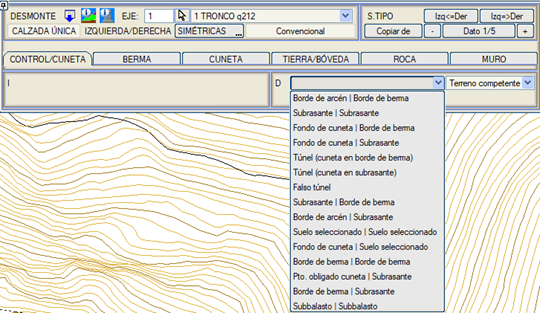
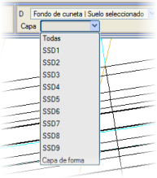
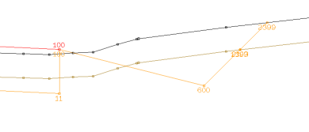
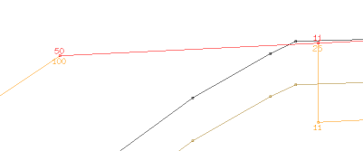
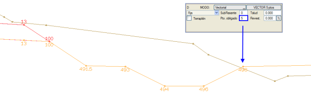

Kesit kontrolü, arazi yüzeyine göre konumu yarma veya dolgu kesitinin kullanılmasını belirleyen noktanın yeridir. Referans arazi veya kontrol yüzeyi doğal (varsayılan) veya sağlam zemin olabilir ve program aşağıdaki olanakları sunar:
- Banket Kenarı | Palye Kenarı: Yarma/dolgu kontrolü banket kenarında ve hendek başlangıcı palye kenarında. Banket bitiş noktasının arazi kesitinin üstünde mi altında mı olduğu kontrol edilir. Platform, dolgu kesitiyle; veya sırasıyla palye, hendek ve yarma şevleriyle palye başlangıç noktasından itibaren uygulanarak tamamlanır. Bu mod, banket bitiş kenarı arazinin üzerine çıkar çıkmaz hendeği kaldırır. Hendek açısından en ekonomik olanıdır.
- Terasman | Terasman: Yarma/dolgu kontrolü üstyapı şev eteğinde ve hendek başlangıcı üstyapı şev eteğinde. Palye başlangıç noktasından itibaren, yarma palyesi ve yarma kaplama şevi terasmanı kesene kadar uygulanır. Eğer bu nokta arazinin altındaysa, buradan itibaren hendek ve yarma şevleri uygulanır. Eğer o nokta üzerindeyse, dolgu palyesi ve kaplama şevi ile yeniden hesaplanır. Üzerinde olması durumunda dolgu şevleri uygulanır. Altına geçerse hendek ve yarma şevleri uygulanır (kesit dolgudur, ancak küçük yüksekliği nedeniyle hendeklidir).
- Hendek Tabanı | Palye Kenarı: Yarma/dolgu kontrolü hendek tabanında ve hendek başlangıcı palye kenarında. Palye başlangıç noktasından itibaren yarma palyesi ve hendek yerleştirilir. Eğer hendek tabanı arazinin altındaysa, yarma şevleri eklenir. Eğer hendek tabanı üzerindeyse, dolgu palyesi, terasmana kadar üstyapı şevi ve dolgu şevleri uygulanır.
- Hendek Tabanı | Terasman: Yarma/dolgu kontrolü hendek tabanında ve hendek başlangıcı üstyapı şev eteğinde. Platform sonundan itibaren palye ve yarma üstyapı şevi terasmanı kesene kadar yerleştirilir, burada hendek konur. Eğer hendek tabanı altındaysa yarma şevleri eklenir. Eğer üzerindeyse, palye, üstyapı şevi ve dolgu şevleriyle yeniden başlanır. Bu mod, mümkün olan tüm hendekleri koyar.
- Terasman | Palye Kenarı: Yarma/dolgu kontrolü üstyapı şev eteğinde ve hendek başlangıcı palye kenarında. Bu tip uygulandığında, dolgu kesitiyle denenir ve eğer kontrol noktası arazi yüzeyinin altında kalırsa, o zaman yarma kesiti kullanılır (hendek tabanı havada kalsa bile). Hendek tamamen inşa edilir ve noktalarından biri veya tamamı arazinin üzerinde kalsa bile, yarma kesiti geometrisiyle araziye ulaşılıp ulaşılamadığı denenir (bunun için dolgu yapılması gerekse ve dolgu metrajı çıksa bile). Her durumda tüm kesit arazinin üzerinde kalırsa, o zaman kesit Hendek Tabanı | Palye Kenarı tipinin yapacağı gibi inşa edilir.
- Banket Kenarı | Terasman: Yarma/dolgu kontrolü banket kenarında ve hendek başlangıcı terasmandan. Kesit, dolguda Banket Kenarı | Palye Kenarı gibi ve yarmada Terasman | Terasman gibi davranır.
- Seçme Malzeme | Seçme Malzeme:
Yarma/dolgu kontrolü seçme malzemenin taban drenajında ve bu aynı noktaya bağlı hendek. Bu durumda üstyapı kapanma şevi, terasman drenajından seçme malzeme drenajına kadar uzatılır, buraya 301 kodlu bir köşe noktası eklenir ve bu noktadan itibaren hendek inşa edilir.
- Hendek Tabanı | Seçme Malzeme:
Yarma/dolgu kontrolü hendek tabanında ve seçme malzemenin taban drenajına bağlı hendek. Seçme Malzeme | Seçme Malzeme durumunda olduğu gibi, üstyapı kapanma şevi, terasman drenajından seçme malzeme drenajına kadar uzatılır, buraya 301 kodlu bir köşe noktası eklenir ve bu noktadan itibaren hendek inşa edilir.
Seçme malzeme drenajına hendek bağlayan kontroller için, hangi seçme malzeme katmanının kullanılacağı önceden belirlenebilir (varsayılan olarak hepsi).
Formasyon tabakası seçeneğini kullanarak bu kontrolde Hendek Tabanı / Seçme Malzeme kullanarak, formasyon tabakası tavanının drenajına hendek asılabilir.
- Palye Kenarı | Palye Kenarı: Yarma/dolgu kontrolü palye kenarında ve hendek başlangıcı palye kenarından.
- Subbalast | Subbalast:
Demiryolu projeleri için, yarma/dolgu kontrol noktası olarak subbalast kenarını ve hendek için başlangıç noktası olarak subbalast kenarını alır.
Bu mod, bu durumlarda aşağıdaki gibi davranır:
- Eğer yarma palyesi uygulandığında (tanımlıysa) kontrol noktası arazinin üzerinde kalırsa ve dolgu palyesi uygulandığında nokta altında kalırsa, o zaman yarma palyesiyle (tanımlıysa) yarma kesiti kullanılır.

Yukarıdaki çizimde, yarmada palye olmayan ve hendek tanımlı olan bir kesit gösterilmektedir. Dolguda ise palye tanımlıdır. Aşağıdaki çizimde dolgu kesitini nasıl aldığı görülmektedir.
- Eğer yarma palyesi uygulandığında (tanımlıysa) kontrol noktası arazinin altında kalırsa ve dolgu palyesi uygulandığında nokta üzerinde kalırsa, o zaman dolgu kesiti kullanılır.

- Hendeğin Zorunlu Noktası | Terasman: Yarma/dolgu kontrol noktası, hendeğe verilmiş olan zorunlu noktaya taşınır. Bu kontrol kullanıldığında, vektörel hendek için tanımlanan kodlar korunur. Hendek vektörü terasmana bağlanacaktır.

- Palye Kenarı | Terasman: Yarma/dolgu kontrol noktası palye kenarına konur. Hendek vektörü terasmana bağlanacaktır.
KONTROL/HENDEK menüsünden, kesitin ne zaman tünel veya yarma-ört tünel olduğu da tanımlanır.
|